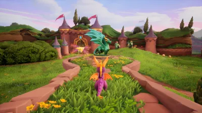

Baldurs Gate 3
“ I got this game awhile after release even though it was getting amazing feedback when it was first released. When I first purchased it and started playing, I ended up staying up and playing the game well into the wee hours of the morning. Which is a terrible habbit really but I couldn't help it. As soon as I started playing it, it was so immersive with the character creation, the story, and the ability to build relationships with the characters that I couldn't help myself. Another reason why I happen to love this game so much is due to the fact that it is a game that me and my girlfriend play together. When we have our designated time to spend with just each other, we usually play this game together. I cherish those moments and there are some of the most fun moments I have when gaming. ”

Horizon Zero Dawn Series
“The series holds two games, Horizon Zero Dawn and Horizon Forbidden West. These games are the type of games that I could replay over and over again and not get tired of the story. The story is well written and very immersive. Not to mention that the world the game is set in is just magnificently beautiful. It is also a game with an original story, if there is a game like it I have yet heard of it. When the second one was to be released I remember being at work and immediately calling my girlfriend to buy it as soon as she can so I could start playing it. The game is open world where there are machines that are being made by the old ones, which were humans from "our time" and are no longer there, to help remake and protect the Earth. Unfornately a Cauldron, where they are fabricated, started making machines that are corrupted. It is the main characters duty to figure out why this is happening and fix it. I recently got one of my best friends in it, and it is one of my favorite things helping her through the game when she struggles to get past a part. I love sharing things that I find enjoyable with the people I love.”

Immortals Of Aveum
“I really wish this game did better when released as it deserves so much more credit than it received. I first started playing this last week actually after debating whether I wanted to try it or not. I am definitely pleased to say I wasn't disappointed and am glad that I tried it. It was unfortunately released in a terrible time frame to where it didn't sell well and some people didn't like it so it gets some negative feedback. I beg to differ, I started playing it and it was definitely a game I couldn't put down. Which says something as I am notorious for picking up games, playing for awhile, then forgetting about it for months. I ended up beating it within a few days. The story can be seen as generic, but the gameplay is fun and the story is pretty good despite that. You are an ordinary citizen in a town that was built over a "wound" in the ground, when come to find out, you are capable of holding all three forms of magic. Where you then dedicate your life to trying to figure out a way to win or at least stop the everwar, which is a war for control of the magic in the world of Aveum. I think the reason I love this game as much as I did is because it is an underdog game. It released in a timeframe where bigger and more anticipated games were released so it got trampled and covered in the dirt. When it was finally realized, people said it was generic and wasn't surprised it didn't do well. Well I digress, I had some of the most fun with that game as I have had with a game in awhile.”

Once Human
“ This game was just recently released and is currently still in beta testing so it is free to play on computers only. I was introduced to this game a couple days ago by my girlfriend. It is a game that is an open world multiplayer. To be honest, I wasn't too sure I would enjoy this game. It just didn't seem that interesting as it seemed like any other generic open world survival game. But, I tried it anyway. I am always up for new games, so any recommendations are welcome. I was thoroughly suprised by it though. It was unique in terms of story, mechanics, and while you wouldn't think a survival game would have one, a battle pass and event mechanism built into it. Here is another thing, I typically get bored of survival games after some time of playing them, especially without friends. But here I am, still playing it and absolutely destoying these bosses. The game has a very large map, and each area being a different level and having different sets of quests and bosses. Having much of the same animals but the creatures are humans who have been heavily altered by the chemical raging around the world. Some looking like normal people with spotlight, tvs, or brief cases as heads. This game gives me an opportunity to be able to play and spend time together with friends. Battle royal type games are fun to play and bond with friends, but to me it has nothing compare to a good multiplayer survival game.”

Ratchet & Clank
“Now this is a classic that I had grew up on as a kid. Playing as a lombax named Ratchet with a little robot friend named Clank saving the world. This was a game that I was absolutely OBSCESSED with. I used to play Ratchet & Clank: Tools Of Destruction over and over again on the PS3, it was probably the only game I would play for a long time as a kid. I'm entirely positive my parents got terribly annoyed by it. I was so destraught when the game disc for it had become unplayable due to scratches while I'm sure everyone in the household started jumping for joy. Though, wouldn't you know it, the game was put onto PSPlus. So years later as a teen when I got my own PS4 and able to pay for PSPlus, I was able to annoy my family once more.”

Jak and Daxter
“Ah, yet another classic that I grew up on. Daxter is the cutest little weasle otter ever, just saying. There isn't much I remember from when I played this as a kid, as I am sure my brothers hogged the system we had at the time. Jerks. But I do remember playing it and loving it. It is another classic that has been remastered to be playable on the PS4. Unfortunately, at that time I wasn't quite yet working so I didn't have the ability to purchase it and relive the game. So when I tell you I was ecstatic when my brother told me he bought them, I show no shame and begged him to play it. He allowed it, and I repayed him back of all those years of hogging the console. I think my favorite one is Jak II, being in the city with these dark new powers. Definitely accidentally terrorized the city zipping around on a flying car and accidentally hitting guard vehicles. I can't fly well in that game to save my life, so I was constantly running for my life.”

Ark Survival
“This game is probably the most sentimental to me. I was around 13 years old when I first heard of this game, I am 21 almost 22 now. I remember my sister and her husband telling me about it as I like dinosaurs and I soaked it all in like a sponge. Unfortunately, at this time the game was only playable on PC, which I did not have, I only had a PS3 at the time. I was super bummed as I really wanted this game. This is where the sentimental meaning comes into the story. For my birthday that year, my brother-in-law and sister built me a whole PC and a steam gift card just so I could play that game. I don't mean buying a prebuilt one either they both bought the individual parts of the PC so that my brother-in-law could build it. I was unaware of this whole thing as my mom and I were in Colorado visting family at the time, I was completely surprised when I came home and suddenly there is a whole PC in my room. This action of theirs also sparked an interest in me with computers and got me to where I am today. That same brother-in-law being the one to teach me how to build my very own PC. I have a new PC now that I built myself, but I still have that old one and refuse to get rid of it as that 13 year old in me is still heartwarmed from the gesture of my family. Anyway, the game is a survival game. Much like Minecraft, just realistic and with dinosaurs. Those very dinosaurs you can tame, and most you can even ride. What 13 year old wouldn't want to ride on the back of a T-Rex traipsing through the forest. I might be 21 now, but I still very much enjoy playing this game and flying around on my Argentavis.”

Stardew Valley
“This game holds a special place in my heart as it is a game I am able to play with my friends and family with ease. Due to it not being a very large game and its not as demanding like most of the other games that I like to play. It is a simple game really, its a farming game where you are in this new town from the farm you inherited. There are the normal seasons with crops and trees that are dependent on a certain season. While that may seem cutesy and easy enough, don't let that fool you. There are two mines you can go in, both with I think 100 levels. The first one is the one at the town you live in, every 40 or so levels you get new minerals but that also means new creatures that you have to defend yourself against. The second mine is even harder, there has been more than one occasion where my sister, girlfriend, and I have all ran screaming for our lives in either cave. This is a game that I would recommend to anyone, as it is easy to play and very loveable in terms of the game, mechanics, etc. I love this game since it is one game that I can play with some of my family and friends and bond with them.”

Spyro
“What's this? Another classic? Yes. This is another game I grew up on as a kid. This one gives me some fond memories. I didn't play this one much at home, but I played it a lot at my Uncle's old house. I couldn't have been any older than 8 years old when I remember me and my uncle taking turns on his little tv playing Spyro, running around as a small purple dragon, saving the dragon world. Who would've thought an 8 year old could save a whole world right? Whenever one person would die, it would be the other one's turn. You know the classic trade in terms of playing a singleplayer game. That is one of the best memories I have of this game, after that I don't really remember being able to play it much. It was almost remastered for the PS4, though I didn't wait for it to come onto PSPlus, I just bought it outright. To my surprise there was three games, and you can absolutely bet that I played all three of them. Back to back. Took me a few weeks, and a few choice of words from frustration. I don't know what it is about these older classic games like Spyro and Crash Bandicoot that make them difficult in a way that is frustrating. While I loved playing it then, it is one of my favorite games, I will never forget how much I loved playing it with my uncle.”
Phasmophobia
“Who doesn't want to scare the pants off themselves? I love this game as it is a way for me to bond with my nephew, at least he doesn't think I'm too old to be cool to him yet. Sure, we will play other games together but this seems to be the one we usually gravitate towards. I also love playing this game with my girlfriend and best friends. Running head-first into a building to try and figure out what ghost is living there is definitely a rush. Especially when that said ghost is very active. I don't know what I did to these ghosts but they always seem to be after me. Doesn't matter if someone else is in the room it resides in, it somehow manages to always find me on the other side of the building and make me pee a little. These tactics can either be screaming in my ear. Yes screaming in my ear, they absolutely do that, it seems to be their favorite. Singing an old lullaby while turning the lights read. Or my personal favorite (definitely not), it runs at you while making a weird but creepy groaning noise. There have been multiple scenarios where I high-tailed it back to the truck (a safe place) and stayed the the duration of the game while whoever I am playing with figures the rest out.”